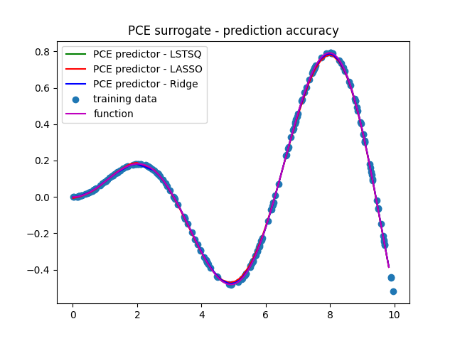

Note
Go to the end to download the full example code or to run this example in your browser via Binder
Sinusoidal Function (1 random input, scalar output)
In this example, PCE is used to generate a surrogate model of a sinusoidal function with a single random input and a scalar output.
Import necessary libraries.
import numpy as np
import matplotlib.pyplot as plt
from UQpy.distributions import Uniform
from UQpy.surrogates import *
Define the sinusoidal function to be approximated.
Create a distribution object, generate samples and evaluate the function at the samples.
Create an object from the PCE class, construct a total-degree polynomial basis given a maximum polynomial degree, and compute the PCE coefficients using least squares regression.
max_degree = 15
polynomial_basis = TotalDegreeBasis(dist, max_degree)
least_squares = LeastSquareRegression()
pce_lstsq = PolynomialChaosExpansion(polynomial_basis=polynomial_basis, regression_method=least_squares)
pce_lstsq.fit(x,y)
Create an object from the PCE class, construct a total-degree polynomial basis given a maximum polynomial degree, and compute the PCE coefficients using LASSO regression.
polynomial_basis = TotalDegreeBasis(dist, max_degree)
lasso = LassoRegression()
pce_lasso = PolynomialChaosExpansion(polynomial_basis=polynomial_basis, regression_method=lasso)
pce_lasso.fit(x,y)
Create an object from the PCE class, construct a total-degree polynomial basis given a maximum polynomial degree, and compute the PCE coefficients using ridge regression.
polynomial_basis = TotalDegreeBasis(dist, max_degree)
ridge = RidgeRegression()
pce_ridge = PolynomialChaosExpansion(polynomial_basis=polynomial_basis, regression_method=ridge)
pce_ridge.fit(x,y)
PCE surrogate is used to predict the behavior of the function at new samples.
x_test = dist.rvs(100)
x_test.sort(axis=0)
y_test_lstsq = pce_lstsq.predict(x_test)
y_test_lasso = pce_lasso.predict(x_test)
y_test_ridge = pce_ridge.predict(x_test)
Plot training data, true function and PCE surrogate
n_samples_ = 1000
x_ = np.linspace(min(x_test), max(x_test), n_samples_)
f = sinusoidal_function(x_)
plt.figure()
plt.plot(x_test, y_test_lstsq, 'g', label='PCE predictor - LSTSQ')
plt.plot(x_test, y_test_lasso, 'r', label='PCE predictor - LASSO')
plt.plot(x_test, y_test_ridge, 'b', label='PCE predictor - Ridge')
plt.scatter(x, y, label='training data')
plt.plot(x_, f, 'm', label='function')
plt.title('PCE surrogate - prediction accuracy')
plt.legend(); plt.show()

Error Estimation
Construct a validation dataset and get the validation error.
# validation sample
n_samples = 100000
x_val = dist.rvs(n_samples)
y_val = sinusoidal_function(x_val).flatten()
# PCE predictions
y_pce_lstsq = pce_lstsq.predict(x_val).flatten()
y_pce_lasso = pce_lasso.predict(x_val).flatten()
y_pce_ridge = pce_ridge.predict(x_val).flatten()
# mean absolute errors
error_lstsq = np.sum(np.abs(y_val - y_pce_lstsq))/n_samples
error_lasso = np.sum(np.abs(y_val - y_pce_lasso))/n_samples
error_ridge = np.sum(np.abs(y_val - y_pce_ridge))/n_samples
print('Mean absolute error from least squares regression is: ', error_lstsq)
print('Mean absolute error from LASSO regression is: ', error_lasso)
print('Mean absolute error from ridge regression is: ', error_ridge)
print(' ')
# mean relative errors
error_lstsq = np.sum( np.abs((y_val - y_pce_lstsq)/y_val) )/n_samples
error_lasso = np.sum( np.abs((y_val - y_pce_lasso)/y_val) )/n_samples
error_ridge = np.sum( np.abs((y_val - y_pce_ridge)/y_val) )/n_samples
print('Mean relative error from least squares regression is: ', error_lstsq)
print('Mean relative error from LASSO regression is: ', error_lasso)
print('Mean relative error from ridge regression is: ', error_ridge)
Mean absolute error from least squares regression is: 7.865133220392475e-08
Mean absolute error from LASSO regression is: 0.0063930704619734515
Mean absolute error from ridge regression is: 0.0017239135197681655
Mean relative error from least squares regression is: 0.00395515108038795
Mean relative error from LASSO regression is: 191.84675662343773
Mean relative error from ridge regression is: 0.6837399971836705
Moment Estimation
Returns mean and variance of the PCE surrogate.
n_mc = 1000000
x_mc = dist.rvs(n_mc)
y_mc = sinusoidal_function(x_mc)
mean_mc = np.mean(y_mc)
var_mc = np.var(y_mc)
print('Moments from least squares regression :', pce_lstsq.get_moments())
print('Moments from LASSO regression :', pce_lasso.get_moments())
print('Moments from Ridge regression :', pce_ridge.get_moments())
print('Moments from Monte Carlo integration: ', mean_mc, var_mc)
Moments from least squares regression : (0.07846694959993306, 0.13677988565144267)
Moments from LASSO regression : (0.07733445345774052, 0.13237105177919092)
Moments from Ridge regression : (0.07847949520224526, 0.13504454050124456)
Moments from Monte Carlo integration: 0.07881393454117 0.13692766982783508
Total running time of the script: ( 0 minutes 0.447 seconds)